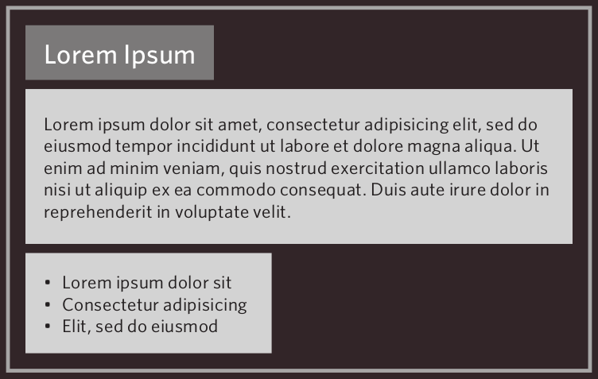
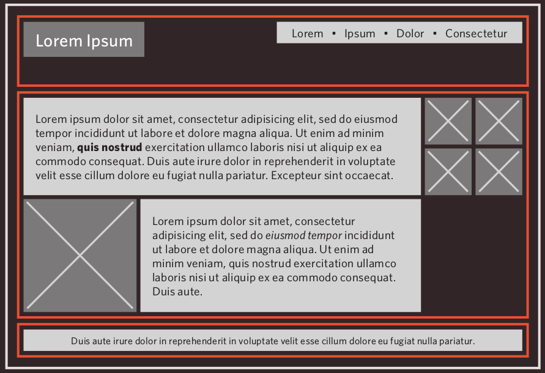
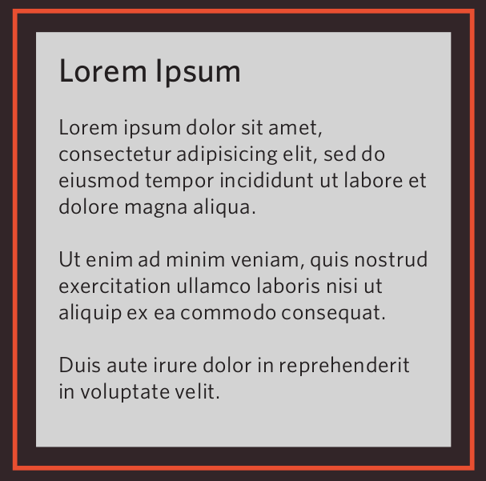
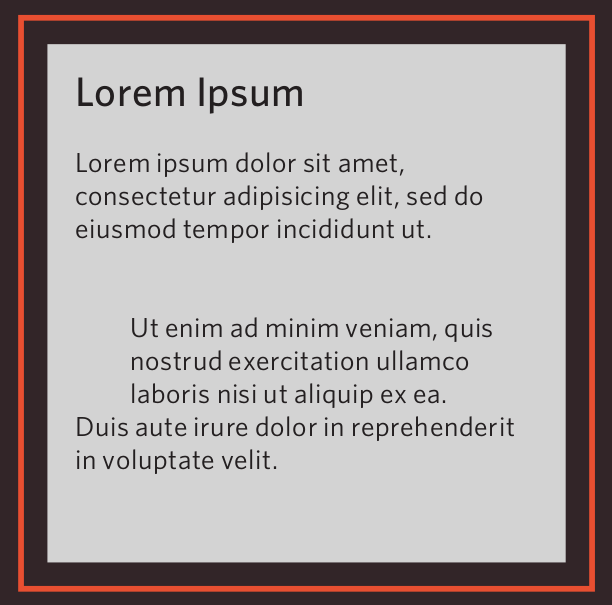
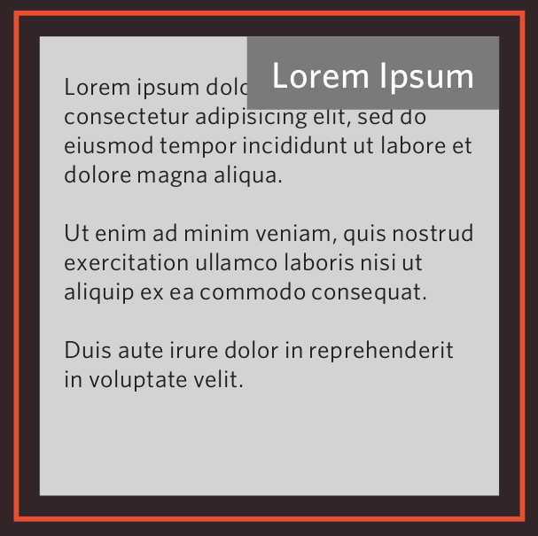
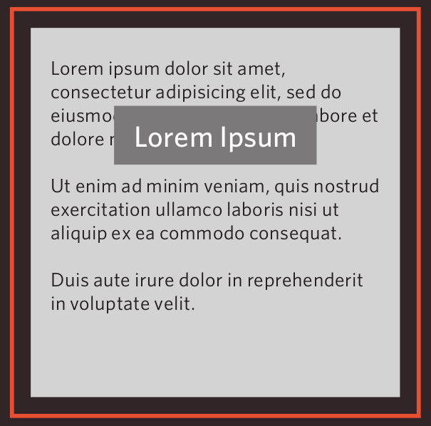
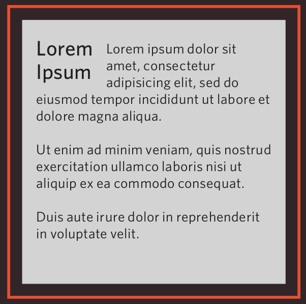
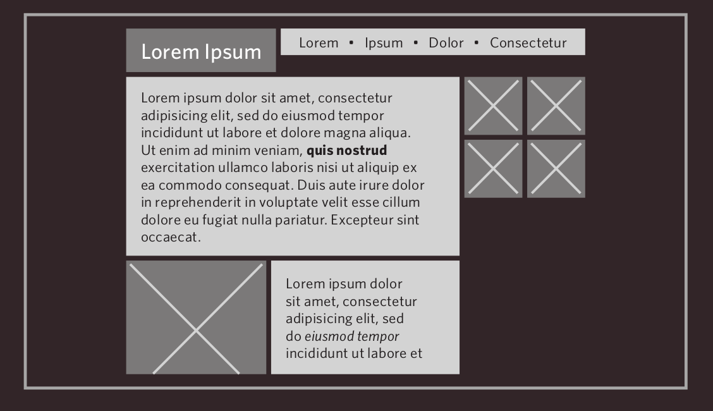
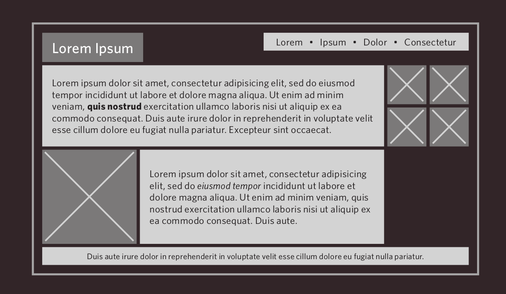

introduction to

© Theodoros Papatheodorou
understanding CSS
imagine that there is an invisible box around every HTML element.
{kind=link}
CSS allows you affect how each individual box and its contents is presented
simple CSS syntax
p {
font-family: Arial;
color: red;
}
- selector: indicates which element to change
- declarations: indicate how to change the selector
- declarations are made up of properties and values
CSS: internal vs. external
use external: when your site has more than one page
- avoid repeating yourself
- keep the content separate from how the page looks
- you can change the styles used across all pages by altering just one file
internalCSS / externalCSS
extra markup #1
- DIV: to group block elements together
- SPAN: to group inline elements together
extraMarkup
extra markup #2
- ID: to uniquely identify an element
- CLASS: to identify several elements as being different from other elements
extraMarkup
CSS selectors
{kind=link}
CSS rule cascading
- last rule takes precedence
- more specific rule takes precedence
- rule marked as !important takes precedence
cascading
CSS rule inheritance
inheritance
CSS color
- color: rgb(255,255,255);
- background-color: rgb(255,255,255);
- opacity: 0.5;
color_margin_padding
pH scale exercise
boxes
- width: : 100px / 50% ;
- min-width: : 100px / 50% ;
- max-width: : 100px / 50% ;
- min-height: : 100px / 50% ;
- max-height: : 100px / 50% ;
border / margin / padding

CSS padding
- padding: 10px;
- padding-top: 10px;
- padding-bottom: 10px;
- padding-left: 10px;
- padding-right: 10px;
color_margin_padding
CSS margins
- margins: 10px;
- margin-top: 10px;
- margin-bottom: 10px;
- margin-left: 10px;
- margin-right: 10px;
color_margin_padding
CSS margins
using the auto property to center elements
CSS border width & radius
- border-width: 10px / thin / medium / thick ;
- border-top-width: 10px / thin / medium / thick ;
- border-bottom-width: 10px / thin / medium / thick ;
- border-left-width: 10px / thin / medium / thick ;
- border-right-width: 10px / thin / medium / thick ;
- border-radius: 10px ;
CSS border styling
- border-style: solid / dotted / dashed / ... ;
CSS border
- border-color: rgb(255,255,255) ;
- border-top-color: rgb(255,255,255) ;
- border-bottom-color: rgb(255,255,255) ;
- border-left-color: rgb(255,255,255) ;
- border-right-color: rgb(255,255,255) ;
pH scale exercise & boxes
text styling
- font-family: courier, arial, times;
text_styling
more fonts using
text styling
- font-size: 16px; / 100%;
{kind=link}
text_styling
text styling
- font-weight: normal / bold;
- font-style: normal / italic;
- text-transform: lowercase / uppercase / capitalize;
- text-decoration: underline / line-through / blink;
text_styling
text alignment
- text-align: left / right / center / justify;
text_styling
link styling
a:link {
color: deeppink;
text-decoration: none;}
a:visited {
color: black;}
a:hover {
color: deeppink;
text-decoration: underline;}
a:active {
color: darkcyan; }
textFun exercise
layouts
block elements
what we have seen so far
{kind=link}
more advanced layouts
containing elements
{kind=link}
layout 1 - normal flow
position: static;
- each block-level element sits on top of the next one
- it's the default
layout 2 - relative positioning
position: relative;
- moves an element in relation to where it would have been in normal flow
- top / bottom: 10px / 20%;
- left / right: 10px / 20%;
layout 3 - absolute positioning
position: absolute;
- the box is taken out of normal flow and no longer affects the position of other elements on the page
- top / bottom: 10px / 20%;
- left / right: 10px / 20%;
absolutePositioning
layout 4 - fixed positioning
position: fixed;
- It positions the element in relation to the browser window. Therefore, when a user scrolls down the page, it stays in the exact same place.
- top / bottom: 10px / 20%;
- left / right: 10px / 20%;
z-index
- When you use relative, fixed, or absolute positioning, boxes can overlap
- if boxes do overlap, the elements that appear later in the HTML code sit on top of those that are earlier in the page
- use z-index to control which element sits on top
fixedPositioning
layout 5 - float elements
float: right / left;
- allows you place an element as far to the left or right of the containing element as possible
- anything else inside the containing element will flow around it
- you should also use the width property to indicate how wide the floated element should be
- ATTENTION:count your pixels/percentages!
sideBySide / sideBySideClear
variability of screens

facebook dimensions
flickr dimentions
two schools of design
fixed width
designs do not change size as the user increases or decreases the size of their browser window
Measurements tend to be given in pixels
fixed width
- advantages
- accurate pixel values
- greate control
- images will always look the same
- disadvantages
- You can end up with big gaps at edges
- page can look small in hi-res screens
- if user increase font size there might be overflow
- design will take more vertical space than liquid layout
liquid layout
stretches and contracts as the user changes the size of their browser window
they tend to use percentages
liquid layout
- advantages
- no space at edges when on a large screen
- adjusts to small screens
- immune to font size changes
- disadvantages
- design can look very different from what intended
- lines of text can become very long / very short
- if user increases font size there might be overflow
- problems with images can arise if not careful
{kind=link}